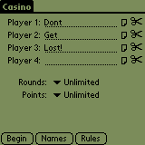
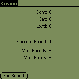
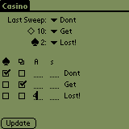
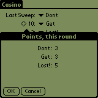
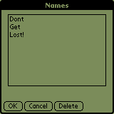
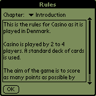

Kasino is a Scorecard for the card game of Kasino as it is played in Denmark. The game is a simple but amusing cardgame for 2 to 4 players each trying to sweep as many card from the table as possible to get the most points. Kasino helps you track the scores. Furthermore, Kasino can be set to notify the players of the end of the game after a certain amount of rounds or when one or more of the players reaches a pre-determined score.
Installation of Kasino is no more different than installation of any other Palm OS program:
When the synchronization is done you will have a 'Kasino' icon in the Unfiled category on your Palm PDA. Feel free to move Kasino to another category.
To use Kasino as Scorecard ... launch Kasino.
 If this is the first time you launch Kasino you will immediately be brought to the New Game form. Enter 2 to 4 names in the Player 1 - 4 fields. Tap on the Note icon to bring up the Select Names. Tap on the Scissor icon to clear the field. If you want to set the length of the game adjust the Rounds and/or Points popups. If you want to play a game which should end after 10 rounds or 100 points (whatever comes first) set Rounds to 10 and Points to 100.
After you press Begin you start playing cards with your friends. Your handheld will show a status screen during the game. The top 4 lines will be the player names and their total points. The Current Round shows the ... current round. Max Rounds and Max Points will show when the game will end. A dash in any of these means unlimited.
If this is not the first run of Kasino you will start in this screen.
You can bring down a menu with some basic items: New, Rules, Names and About.
When you and your friends have ended a round press End Round.
When a round has ended it is time to award point to the players. Select the player who got the Last Sweep (here: Dont, the player who got the 10 of Diamonds (here: Get) and select the player who got the 2 of Spades (here: Lost!).
Then count which player(s) got the most Spades. Mark the corresponding checkbox (here: Dont). Count which player(s) got the most Cards. Mark the corresponding checkbox (here: Get).
Count how many Aces each player has and note that in the A column (here: Lost! got all four aces).
Finally, count how many Sweeps each player has and note that in the s column for each player (here: no sweeps at all).
Then press Update ...
... and a simple status dialog will be shown. If you are satisfied press OK to play another round. If for some reason you think you made a mistake when awarding points, press Cancel.
You can bring up the Names form at almost any time. You can normally select a name and press OK to set the name.
Press Cancel to return to wherever you came from without selecting a name.
Select a name and press Delete to delete that name - you will be asked to confirm the deletion.
You can bring up the Rules form at almost any time.
Select the chapter to read in the Chapter popup. Use the scrollbar or the buttons to scroll.
Use the Up and Down key on your device to scroll the text as well.
Press OK when done.